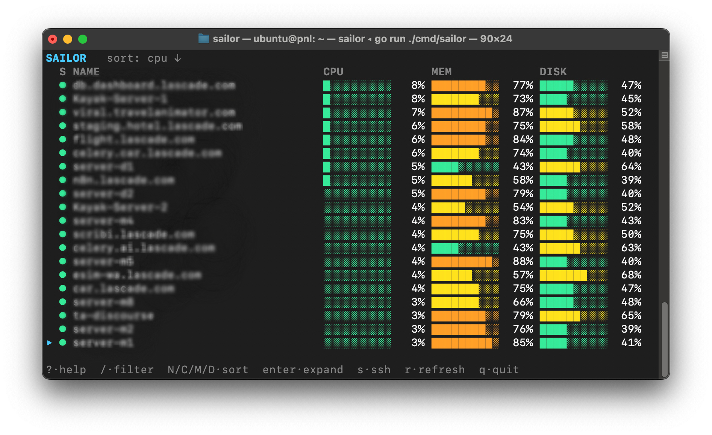
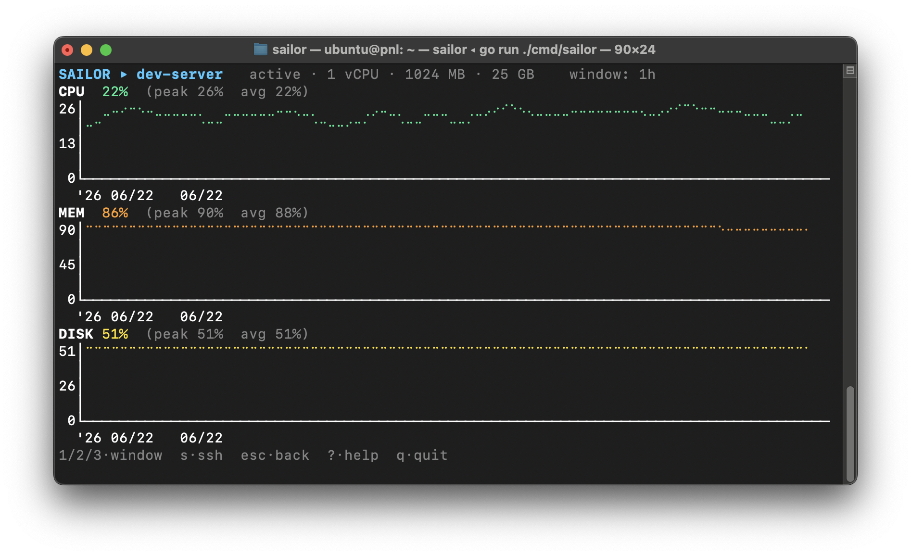

Your Droplets, in the terminal.
A fast dashboard for DigitalOcean Droplets — live CPU, memory & disk, searchable and sortable, with drill-down charts, one-key SSH, and SCP upload.

#Features
Everything you reach for when checking on a fleet — without opening a browser.
▸ Live metrics
CPU, memory and disk per Droplet with colored threshold bars that turn yellow → orange → red as load climbs.
▸ Search & sort
Substring name filter and sort by any metric. The cursor stays pinned to its Droplet as rows re-sort live.
▸ Drill-down charts
Expand any Droplet into stacked CPU/mem/disk time-series over a 1h / 6h / 24h window.
▸ One-key SSH
Hand off to your system ssh for a real shell. The user and key are remembered per Droplet.
▸ SCP upload
Pick local files/folders in a multi-select browser and send them to the Droplet's home directory, with a live progress bar.
▸ Rate-limit aware
A cursor-windowed scheduler keeps Sailor under DigitalOcean's API limit on accounts of any size.
▸ Instant launch
The Droplet list is cached for a day, so the UI paints immediately while fresh data loads.
#Install
Grab a prebuilt binary, or build from source with Go 1.26+.
# macOS (Apple Silicon) curl -L https://github.com/rohittp0/sailor/releases/latest/download/sailor-darwin-arm64.tar.gz | tar xz # Linux (x86-64) curl -L https://github.com/rohittp0/sailor/releases/latest/download/sailor-linux-amd64.tar.gz | tar xz ./sailor
Binaries are published for macOS and Linux on amd64 and arm64.
Or install with Go 1.26+:
go install github.com/rohittp0/sailor/cmd/sailor@latest
…or build from source:
git clone https://github.com/rohittp0/sailor.git cd sailor go build -o sailor ./cmd/sailor
#Usage
Sailor needs a DigitalOcean API token with the Monitoring read scope.
The token is resolved from the DIGITALOCEAN_ACCESS_TOKEN environment variable, falling back to your existing doctl configuration.
export DIGITALOCEAN_ACCESS_TOKEN=dop_v1_xxx
sailor
# …or, if doctl is already authenticated:
sailor
n/a: DigitalOcean always exposes CPU, but
memory and disk usage require the metrics agent (do-agent) on the Droplet.
Droplets without it show CPU only; powered-off Droplets show --.Keybindings
| Key | Action |
|---|---|
| j k ↑ ↓ | Move cursor |
| g / G | Jump to top / bottom |
| ctrl+d / ctrl+u | Page down / up |
| / | Filter by name (esc clears) |
| N C M D | Sort by name / CPU / memory / disk |
| enter / e | Expand to charts |
| s / S | SSH / edit SSH profile |
| u | Upload files/folders (SCP) |
| r | Refresh all |
| 1 2 3 | Chart window 1h / 6h / 24h (expanded view) |
| esc | Back to the list |
| ? | Toggle help |
| q | Quit |
#Expanded view
Press enter on a Droplet for stacked CPU / memory / disk charts. The time window is global and persists across Droplets.

SSH
Press s to connect. The first time, a prompt asks for the login user
(default root) and identity-file path; the choice is saved per Droplet in
~/.config/sailor/hosts.toml — paths only, no secrets — and reused afterward.
Sailor execs your system ssh, inheriting your keys, agent and ~/.ssh/config.
SCP upload
Press u to upload local files or folders to a Droplet's home
directory. A terminal file browser opens at your current directory — l/h
navigate in and out of folders, space checks items across directories,
/ filters, . toggles hidden files — then
enter sends everything selected, with a live progress bar. Selecting a folder
subsumes anything checked inside it. The upload reuses the saved SSH login and runs your system scp.
#How it stays under the rate limit
DigitalOcean allows ~5,000 requests/hour, and each fully-populated row costs three metric calls.
Sailor fetches all stats once at launch so the initial sort is correct, then settles into a cursor-centered window of up to ~23 active Droplets per minute. Off-screen rows keep their last value (dimmed) and refresh as you scroll to them. The expanded view pauses the list and polls just that one Droplet every 5 seconds.
The full design — including why the list re-sorts live and how the budget is spent — is recorded in ADR-0002. Sailor is read-only against your DigitalOcean account by design: it observes and connects, but never powers off, reboots, resizes, or destroys Droplets through the API. The SSH and SCP hand-offs act inside a server you already control (an upload writes files there), not on the control plane.